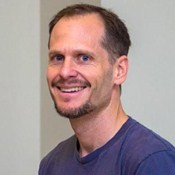

← All workshops
Creating Web Applications with Golang and Google App Engine

Todd McLeod
Workshop leader
Workshop detail
Go is an open source programming language that makes it easy to build simple, reliable,...
and efficient software. Go provides the ability for "server-side" programming. Traditional choices for server-side languages have included PHP, ASP, and JSP. Currently popular server-side programming languages include Ruby, Python, and Node.js. While there are advantages and disadvantages to all languages, no server-side language is going to be faster than "Go." Couple the speed of Go with Google App Engine and Cloud Storage, and you are now using the exact same architecture as Google. This means that your web apps are going to be incredibly fast and will easily scale to millions of users. Go is an amazing choice for a server-side language as it was developed by some of the same individuals who created the C programming language and Unix, two of the most influential languages of all time. Robert Griesemer, Rob Pike, and Ken Thompson created Go to be a modern language that easily uses multiple cores, easily implements concurrency, easily works in distributed environments, and easily allows the programmer to write programs - it has a very lean and user-friendly syntax! Come learn about one of the greatest languages ever created. You will leave with resources and code samples to start making all of your software and apps really go.…Todd McLeod
greatercommons.com/Champion of world class online instruction; teaching online since
1997; honored as one of California’s top community college
instructors; studied online education at UC San Diego; started the
Online Teacher Training Program and taught college faculty in central
California how to teach online; one of the world’s leading trainers in the Go programming language which is currently the
highest paying programming language in America; teacher to 528,918
students last year online; founder of Greater Commons; motivating,
inspiring, and teaching teachers how to teach online at their greatest
potential - this is Todd McLeod, working every day for the greater
common good.